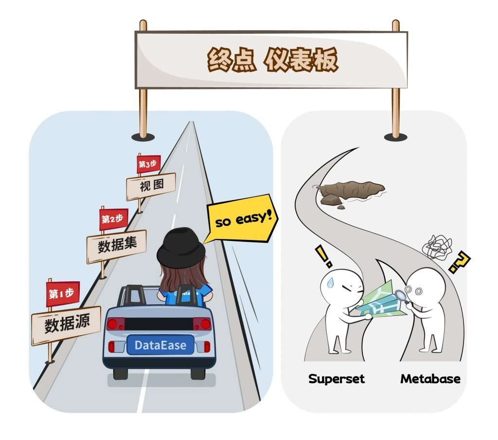
企业业务环境或应用环境中产生的数据大多存储在数据库中，但是这些数据无法直接、形象地加以展示。数据可视化的意义就在于将原始数据通过不同类型的图形进行展示，为数据分析提供更加具象化的手段，这是数据可视化分析工具诞生的使命和意义。
无论是对于企业还是个人，数据可视化都是一种常态的需求，数据可视化工具的使用群体也在不断扩充。面对庞大且持续增加的使用群体，数据可视化工具的易用性至关重要。它决定了工具使用者所能够获得什么样的使用体验。
知名研究机构Gartner在题为《Survey Analysis: Key Selection Criteria for Business Intelligence and Analytics Platforms》的报告中指出，工具的易用性对企业获取商业价值是排在第一位的影响要素。
DataEase（dataease.io）是一款开源数据可视化分析平台，其使命就是做一款“人人可用的开源数据可视化工具”。DataEase由中国工程师团队主导开发，在国内拥有活跃的开源社区，其提供的教程文档、社群交流、原厂支持等服务都给用户带来了极大的便利。
Superset和Metabase是国外优秀的开源数据可视化工具。之前我们对比了DataEase和Superset在部署上的差异，参见《相比Superset，DataEase开源工具的部署为什么更简单？》一文。今天我们来对比一下Superset、Metabase和DataEase的使用体验。
首先用一张图概括使用Superset、Metabase和DataEase制作一个仪表板的主要步骤：
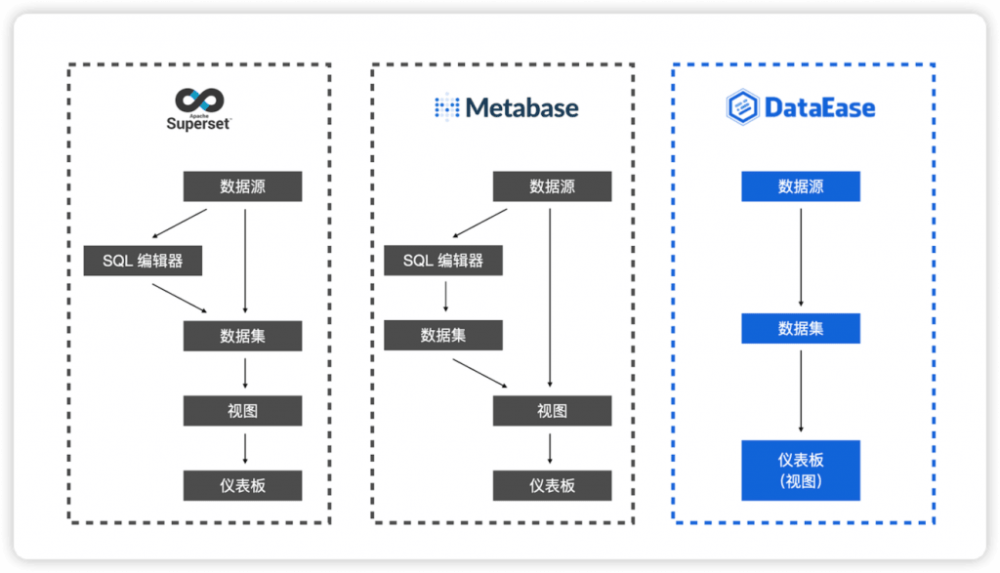
如上图所示，使用三款软件制作仪表板的主要流程大体相同，都包括了：创建数据源、创建数据集、通过数据集展示数据以及形成仪表板等步骤。但是相比其他两款软件，DataEase对创建仪表板的步骤在细节上进行了大幅度的简化，主要体现在以下几点：
1. DataEase通过拖拉拽的操作进行视图制作和仪表板排版，简单易用，降低了用户的学习成本；
2. 视图制作的过程中，大部分的操作选项支持默认配置，减少了用户重复选择的冗余操作；
3. 支持关联数据集的功能，用户可以在功能界面进行相关配置，代替了SQL语句的编写，降低了学习门槛和使用门槛；
4. 视图制作和仪表板制作过程合并，不需要先制作视图再调整仪表板布局；
5. 仪表板设计整体过程：数据源→数据集→仪表板，制作逻辑更加清晰。另外两款软件操作入口不统一，设计逻辑复杂。
接下来，我们就从数据源、数据集、视图、仪表板四个步骤对Superset、Metabase和DataEase这三款开源数据可视化工进行详细对比。
创建数据源
■ Superset
Superset支持的数据源种类较多，其中有10种数据源可以直接使用，具体包括：Druid、Hive、SparkSQL、AuroraMySQL（DataAPI）、AuroraPostgreSQL（DataAPI）、MySQL、PostgreSQL、Presto、SQLite和Trino，其他类型数据源需要自行安装驱动程序才可以使用。配置项包括：数据库IP、用户名、密码、端口、数据库名称、开启SSL等。
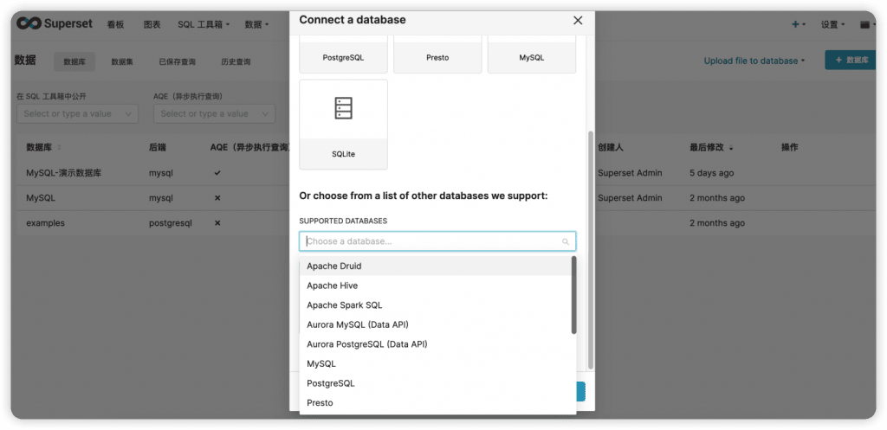
■ Metabase
Metabase数据源需要进行后台配置，目前支持13种数据库。配置项包括：数据库IP、用户名、密码、端口、数据库名称、开启SSL、配置SSH隧道等。
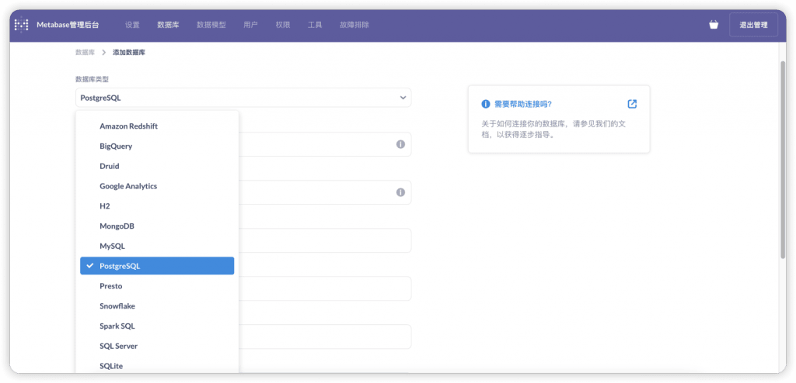
■ DataEase
DataEase当前支持20种数据库，数据源配置界面展示了所有当前所支持的数据库类型，用户可以选择对应的数据库直接配置使用。配置项包括：数据库IP、用户名、密码、端口、数据库名称等。
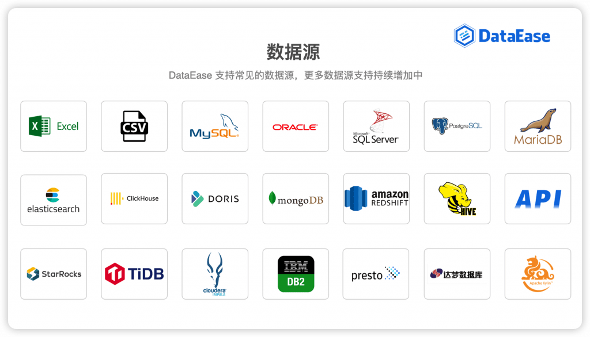
创建数据集
■ Superset
Superset创建数据集的入口不唯一，有两种创建方法：
1. 可以在“数据集”界面中添加数据集。此方法只能添加数据库的表，添加之后可以按需对该表进行字段调整；
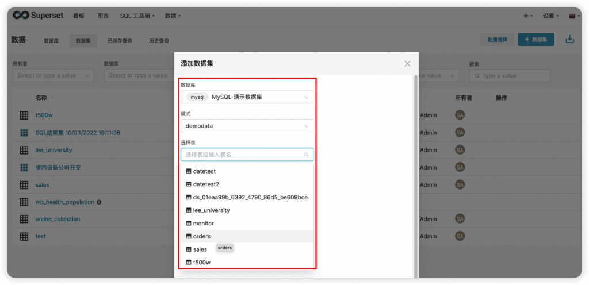
2. 可以在“SQL编辑器”界面中编写SQL语句生成数据表，并保存到数据集。
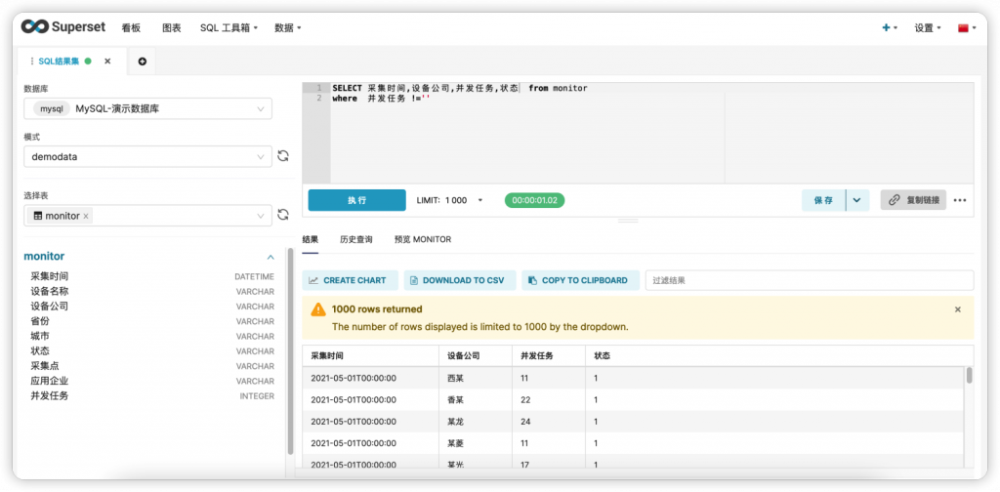
■ Metabase
Metabase的数据集与数据源一样，都属于后台配置，数据集创建的操作界面也在不同的位置。
数据集分为：
1. 数据模型：即数据库数据集，就是对数据源的字段进行调整，如果无需调整可以直接使用数据表进行视图编辑；
2. SQL数据集：属于前台配置项，可以编写SQL语句作为图表的数据来源。
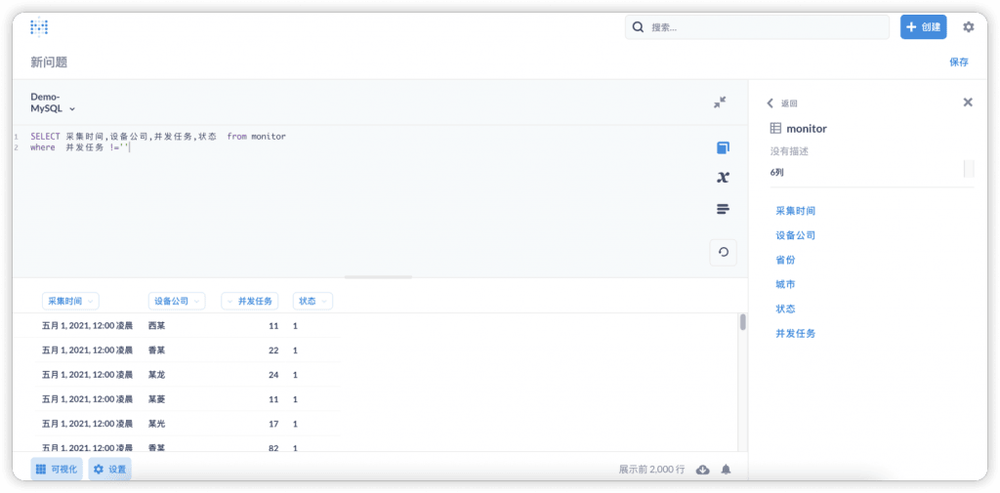
■ DataEase
使用DataEase创建数据集时，可以在同一个界面、同一个按钮下创建不同类型的数据集。
数据集类型包括：
1. 数据库数据集：选择数据库中的一张表作为数据集；
2. SQL数据集：编写SQL语句，将单个表或者多个表查询的结果作为数据集；
3. Excel数据集：将Excel文件或者CSV文件作为数据集；
4. 关联数据集：即通过可视化界面，将若干个数据表做关联查询后生成新的数据集。当然，多表的关联也可以通过编写SQL的方式实现，关联数据集功能给不懂SQL相关知识的用户带来了极大的便利；
5. API数据集：将从HTTP API获取的数据作为数据集。
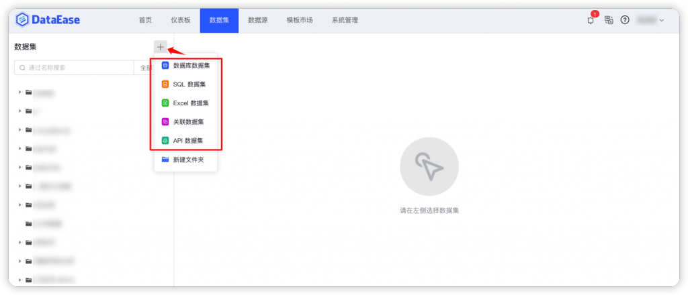
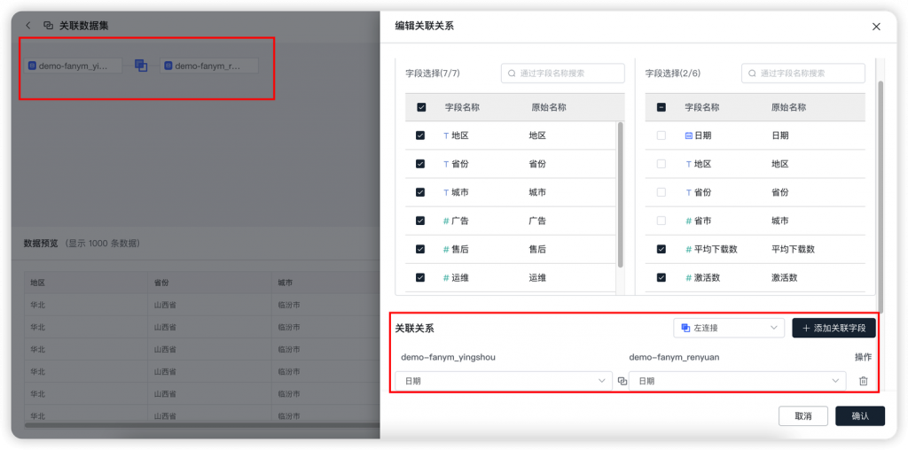
DataEase的数据集还支持直连模式和定时同步模式：
1. 直连模式：指的是直接在数据库中查询或计算，也是大多数BI工具使用的一种模式。但直连模式的查询速度受限于业务端数据库的性能，还会给数据库带来查询压力；
2. 定时同步模式：定时同步模式下的数据集可以将业务端数据库的数据拉取到DataEase内置的Doris中进行分析和计算，这样既提高了查询速度，又避免了对业务端的数据库带来查询压力。
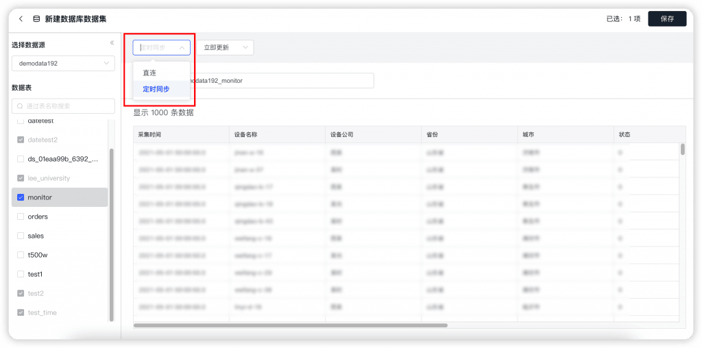
制作视图
■ Superset和Metabase
Superset在配置完维度或指标后，需要点击“UPDATE CHART”按钮才能呈现数据。
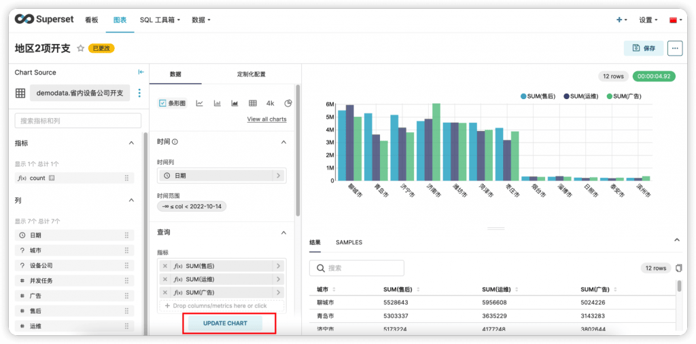
Superset在选择指标进行展示时，需要选择指标的聚合方式。目前没有默认的聚合方式，所以每次切换指标都需要重新选择一次聚合方式。
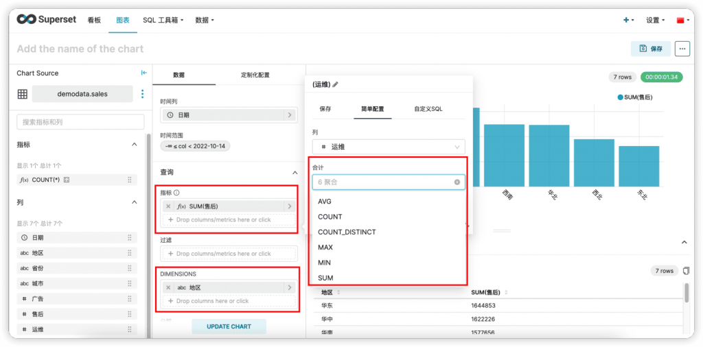
Superset和Metabase的视图仅能进行数据展示的调整，对于视图外观无法进行调整。
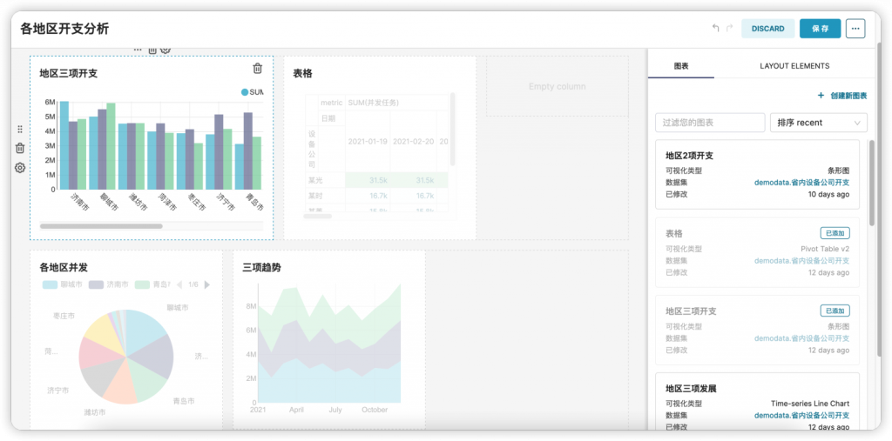
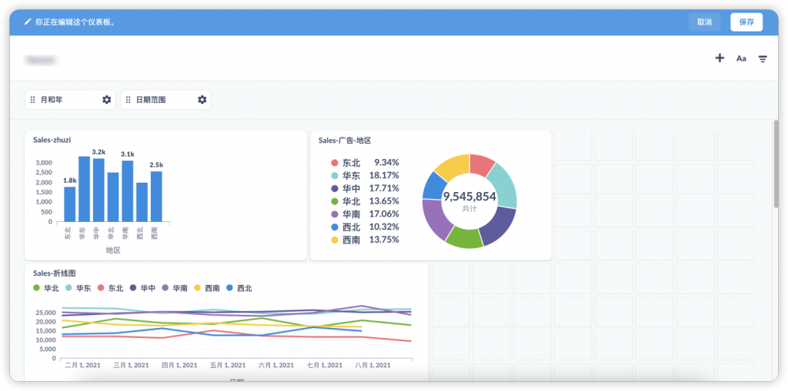
■ DataEase
DataEase目前支持28种视图。在编辑视图时，将数据集的字段拖动到对应框中就可以直接呈现出数据图形。
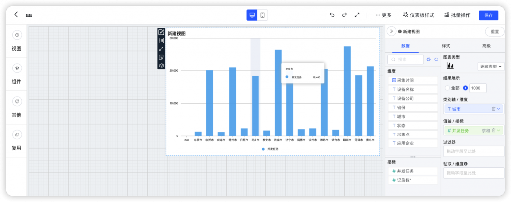
在DataEase中默认设定了“求和”的聚合计算，只有使用其他聚合方式时才需要切换选项。这样在切换指标时，无需选择聚合方式就能实时展示调整的结果。
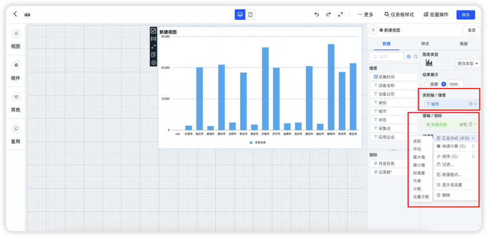
DataEase支持设置视图边框、视图背景、视图的透明度等配置，极大地提升了视图样式的可选择性。
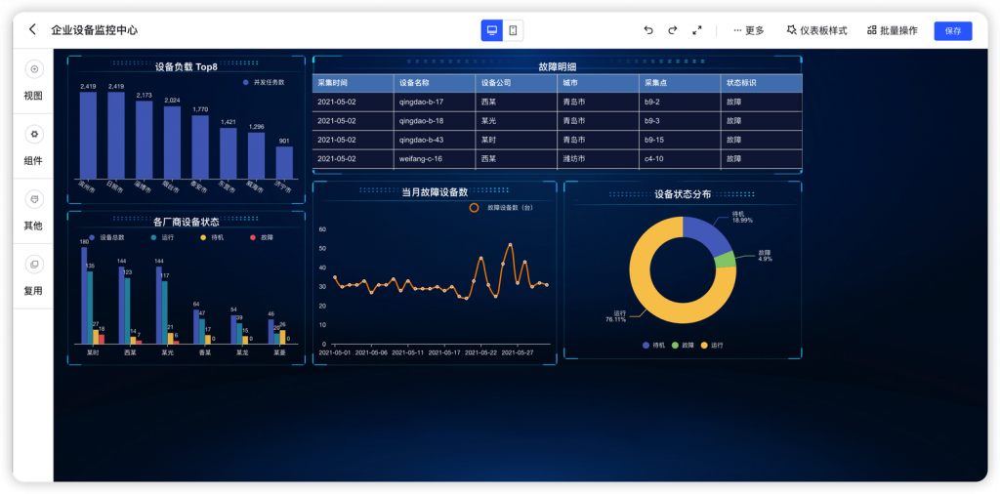
创建仪表板
DataEase创建仪表板的过程与Superset和Metabase不同。DataEase将“视图”板块和“仪表板”板块进行了功能合并，添加视图、调整视图、布局排版等操作都是直接在仪表板中进行的。而Superset和Metabase则需要先制作视图，然后在仪表板中添加制作好的视图。以下是三款软件的仪表板制作界面：
■ Superset
Superset在添加视图之前，需要先对仪表板进行布局，规划好视图的位置，才能将视图添加到仪表板对应的位置。另外，Superset对齐辅助网格比较宽，DataEase所提供的辅助网格颗粒度更细。
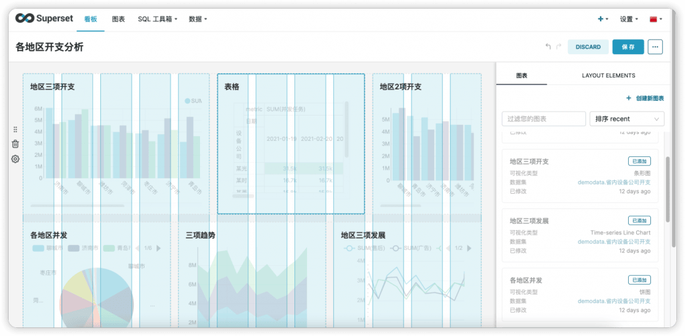
■ Metabase
Metabase的仪表板编辑界面的辅助网格也比较大，调整视图的大小颗粒度不够精细。
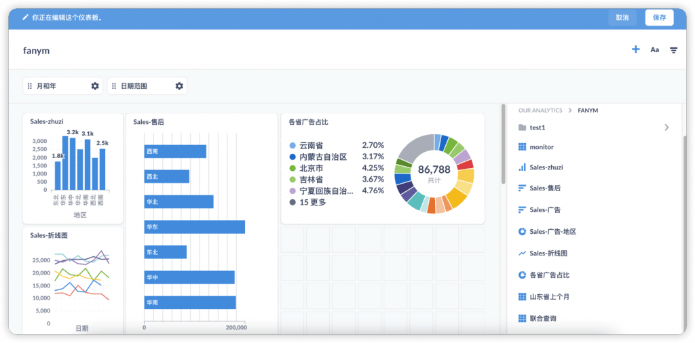
■ DataEase
DataEase的仪表板编辑界面支持组件拖动，拖动过程中自动显示对齐辅助线，仪表板的底版可显示网格参考线以帮助对齐。此外，DataEase还可以对仪表板的背景图进行设置，这是Superset和Metabase目前暂不支持的功能。
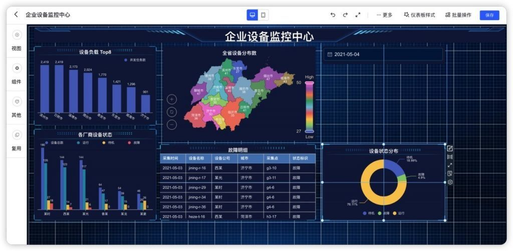
如果在制作仪表板时没有好的设计想法，您也可以在DataEase的“模板市场”功能板块（https://dataease.io/templates/）选择模板直接应用，轻松切换为自己的数据集，免去了设计排版的烦恼。
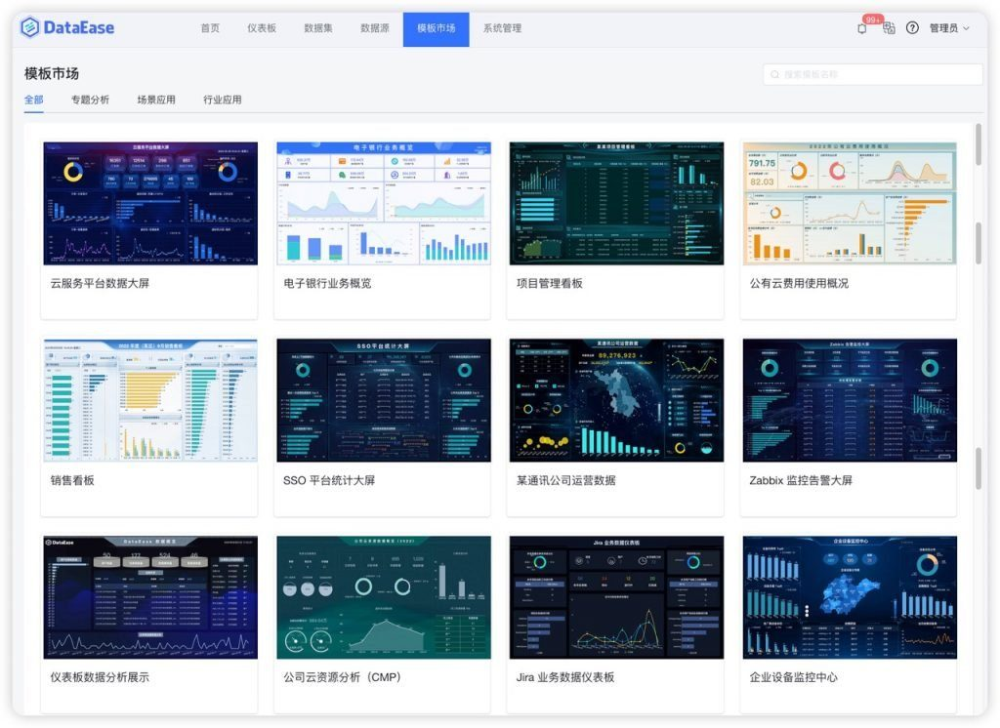
仪表板分享
■ Superset支持将仪表板导出为图片，或者以邮件的形式发送到指定邮箱；支持为指定的仪表板创建访问链接，但访问用户需要用户登录Superset后才可以访问；
■ Metabase支持通过邮件发送制作的仪表板给指定用户，另外可以通过权限管理功能将仪表板所在的集合授权给用户进行查看或编辑，其他分享方式均不支持；
■ DataEase制作完成的仪表板可以导出图片或PDF；仪表板支持分享给指定的用户或用户组，用户登录后可以查看；DataEase也支持创建仪表板的公共链接发送给任何人以供在线访问，公共链接的访问还可以设置密码和有效期；另外，DataEase也支持制定定时发送仪表板的任务，以邮件、钉钉、飞书、企业微信等形式发送给用户。
总结
通过上面的对比我们可以看出，三款开源软件虽然在创建仪表板的步骤基本相同，但是DataEase在细节方面进行了很多优化，有效提升了软件的易用性。
■ 数据源：三款软件的创建方式基本一致。而在操作页面上，Superset和Metabase都是通过下拉菜单选择需要连接的数据库，DataEase则将所有支持的数据库进行平铺展示，在操作界面上做了美化；
■ 数据集：DataEase支持创建数据库数据集、SQL数据集、表格文件、关联数据集、API数据集多种类型的数据集，并且操作界面清晰明确；Superset将数据库数据、表格文件都放置在数据库中进行纳管，创建的数据集只有数据库数据集和SQL数据集两种，不支持通过HTTP API的形式获取数据，而且需要在不同的界面进行创建；Metabase的数据集仅来自于数据库，不支持通过表格文件和HTTP API的形式来创建数据集。此外，只有DataEase的数据集支持定时同步数据功能；
■ 视图：Superset支持的视图种类相当丰富，但是配置图表的过程会包含一些重复性的工作。而DataEase把一些常用的选项设置为默认值，减少了操作过程中的重复性内容；视图外观方面，DataEase可以配置视图边框、视图背景图、透明度等，Superset和Metabase暂不提供这方面的配置功能；
■ 仪表板设计：DataEase提供了颗粒度更细的辅助网格，Superset和Metabase的辅助网格或间距都比较宽；Superset做仪表板布局前需要先规划视图分布，才能将视图添加到仪表板，DataEase则可以随意拖放视图位置，视图之间可以自动吸附；在仪表板的样式支持方面，DataEase支持配置仪表板的背景图、深浅色主题、对仪表板内的视图进行统一设置等，这是Superset和Metabase暂不具备的功能。
■ 仪表板分享：DataEase支持更多的仪表板分享途径，包括邮件、钉钉、飞书、企业微信、导出PDF、导出图片和导出表格等形式；Superset可以导出图片、发送邮件和创建访问链接；Metabase仅支持邮件和授权访问两种方式。